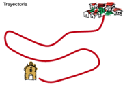

Trayectoria
La trayectoria es la línea imaginaria que une las sucesivas posiciones que ocupa un objeto respecto del sistema de referencia. La distancia recorrida es la longitud de la trayectoria que sigue un objeto móvil entre dos posiciones distintas. Según la trayectoria, los movimientos pueden ser:
a) Rectilíneos: cuando la trayectoria es una línea recta. (Solo vamos a ver trayectorias rectas)
b) Curvilíneos: cuando la trayectoria es una línea curva cualquiera.
c) Circulares: cuando la trayectoria es un círculo.